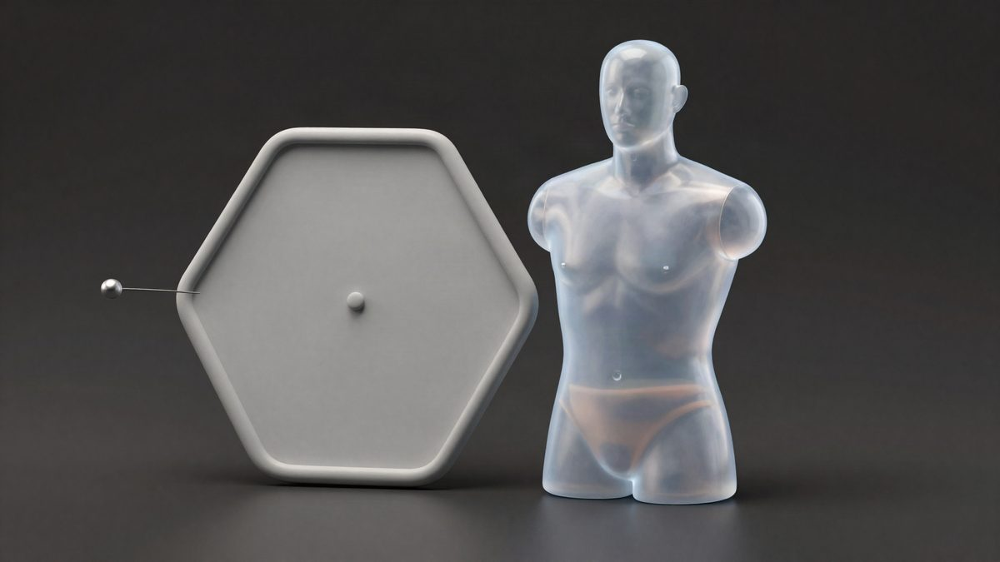

Atomic-6 Space Armor je izdržao udar brzine 7,2 km/s: testiraju ga i za zaštitu astronauta

Američka tvrtka Atomic-6 testirala je štit Space Armor na Texas A&M University. Projektil brzine 7,2 kilometra u sekundi nije oštetio simulirani torzo iza pločice, dok su kod aluminijske ploče fragmenti pogodili torzo. Atomic-6 sada istražuje može li se materijal koristiti i za zaštitu astronauta, no test nije obuhvatio odijelo ni stvarne svemirske uvjete.
Američka tvrtka Atomic-6 testirala je štit Space Armor u Hypervelocity Impact Laboratoryju na Texas A&M University. Simulirani torzo iza materijala nije imao vidljivih oštećenja nakon udara projektila brzine oko 16.100 mph, odnosno 7,2 kilometra u sekundi. Svemirski otpad može pogoditi letjelice brzinama većima od 16.000 mph, a to je ozbiljna prijetnja astronautima tijekom svemirskih šetnji.
Inženjeri su ispalili aluminijsku kuglicu promjera 3 milimetra na dvije konfiguracije zaštite. U prvoj su ispred prozirnog balističkog torza postavili šesterokutnu pločicu Space Armor Lite. Model je isporučio Ballistic Dummy Lab iz Georgije u SAD-u, a sadrži simulirano meko tkivo i kostur. Nakon udara torzo nije bio probijen ni oštećen, a na pločici nije bilo vidljivih pukotina ni ispupčenja na stražnjoj strani.
Usporedba s aluminijem
Za usporedbu je korištena puna aluminijska ploča debljine 4 milimetra. Kut udara, razmak i način montaže bili su isti u oba slučaja. Debljinu ploče Atomic-6 je odabrao prema NASA-inim jednadžbama balističke granice, kojima se procjenjuje može li zaštita izdržati projektile određene veličine i brzine.
Kod aluminija su se fragmenti zabili u simulirani torzo. Riječ je o pojavi koja se zove rear-face spalling: projektil izbija komadiće materijala sa stražnje strane štita, a ti komadići lete prema osobi ili opremi iza njega.
Test nije uspoređivao cijela svemirska odijela ni klasične Whipple štitove, koji koriste odvojene slojeve za raspršivanje otpada.
Može li ga astronaut nositi
Space Armor je izvorno razvijen za zaštitu satelita od mikrometeorita i orbitalnog otpada. Pločica Space Armor Lite teži oko 14 kilograma po četvornome metru, a za primjenu u odijelima bit će potrebno znatno više inženjerskog rada. Chris Hadfield, bivši zapovjednik Međunarodne svemirske postaje i član savjetodavnog odbora Atomic-6, početne rezultate opisao je kao ohrabrujuće. Direktor tvrtke Atomic-6 Trevor Smith također vidi zaštitu astronauta kao moguće proširenje tehnologije.
Izazova je još mnogo. Korišten je nepomični balistički torzo, bez funkcionalnog odijela, tlačne odjeće i sustava za održavanje života. Zato test ne pokazuje sprječava li materijal ozljede ni održava li tlak u odijelu pri stvarnom udaru. Nije poznato ni kako bi se ponašao u stvarnim svemirskim uvjetima.
Atomic-6 planira dodatne pokuse sa zakrivljenim štitovima i različitim kutovima udara, što bi bolje oponašalo prsa ili rame astronauta. Treba ispitati i sustave pričvršćivanja, pokretljivost i zadržavanje tlaka, a za ocjenu primjene u odijelu bit će potrebni i termalno-vakuumski testovi.
Space Armor je nedavno odradio i prvi svemirski let na letjelici Starburst-1 tvrtke Portal Space Systems. Lansirala ga je raketa SpaceX Falcon 9 u rideshare misiji Bandwagon-5 prošlog mjeseca. Moguća uloga u zaštiti astronauta ovisit će o rezultatima daljnjih testova.
Izvor: Interesting Engineering
Povezani članci
 Kineski robot za gašenje požara izdržao je 30 minuta u peći na 1.000 °C19. studenoga 2026.
Kineski robot za gašenje požara izdržao je 30 minuta u peći na 1.000 °C19. studenoga 2026. Nvidia GeForce driveri navodno bez prestanka pišu na SSD, do 30 GB na sat i kad računalo miruje18. studenoga 2026.
Nvidia GeForce driveri navodno bez prestanka pišu na SSD, do 30 GB na sat i kad računalo miruje18. studenoga 2026. Knight Capital je za 45 minuta izgubio oko 460 milijuna dolara zbog koda koji devet godina nitko nije pokrenuo18. studenoga 2026.
Knight Capital je za 45 minuta izgubio oko 460 milijuna dolara zbog koda koji devet godina nitko nije pokrenuo18. studenoga 2026.